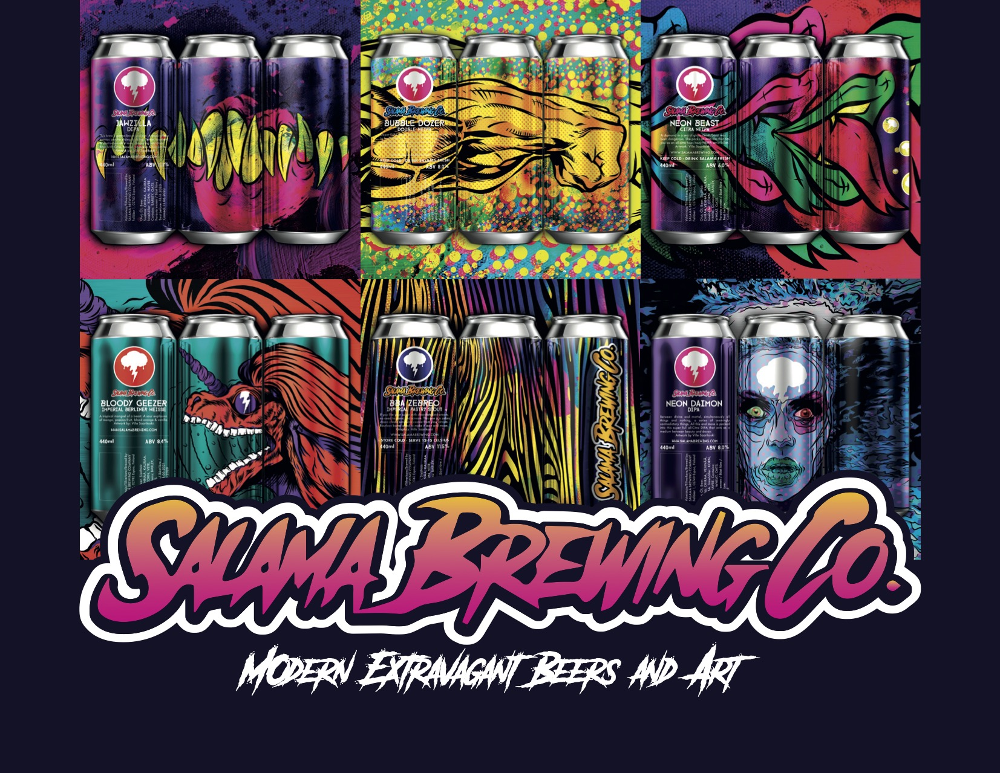

From the Editor
Joni Hammar
Last edited
4.10.2024
Reading time
5 min
Interviewing The Mosfets
The Mosfets on tour.
The Mosfets is a Dutch band that plays tight "the Kinks" kind of rock with psychedelic elements. To further describe their music, they also have some pre-punk sound reminding of the Stooges.I got in touch with Keith Mosfet, the vocalist guitarist songwriter of The Mosfets for more insights about their music, background & notes on the music scene.
Keith Mosfet
“I’ve never really approached psychedelic music as writing psychedelic music, I just kind of end up writing psychedelic music because I think the textures are interesting. As I write songs, the melody and guitar have to be interesting and then everything else just comes together. I think the psychedelic stuff comes afterwards. It is the psych textures that make the song sound more interesting, instead of a straight rock or a straight pop song. It’s like baking a cake: I want to put the cherry on top and I’m using the psychedelic elements for that. “
Big things coming
“My goal is to release a song about every month this year. Plus we recorded a live album last year which I’m going to release that also this year. The plan is to make a vinyl release this year, which is going to include ten of these songs that I’m making this year + maybe four of the live songs. My Friend Pertti Jarla is a Finnish artist and he has already made the artwork for the album and It looks awesome! It’s kind of like the Andy Warhol’s banana in The Velvet Undergrounds album “The Velvet Underground & Nico:” it has very simple white but then intense colors.”
How did it all start?
“I started this band in 2018. I was in a different band before, in 2017, and we were working on an album. My brother had died, and I didn’t want to do this music I was working on. I just started recording in my basement apartment in Toronto and I got a couple of friends to play instruments, and I did the recording and mixing figuring the process out by myself. “
“When I moved in Amsterdam in 2020, I met Maarten, our drummer. I met him skateboarding and we just hung out a lot. He started dating a girl, then she played with us. Then they broke up and she hasn’t played with us anymore. (nervous laughter) We have a really good live set as a three piece. We do sometimes play the four piece, it depends on the set. I’m constantly songwriting so we can just change the set depending on who’s to play with us. “
The Mosfets has also gigged a lot in Finland, in Louhela Jam in 2023 and in Helsinki Psych Fest in the previous years.
“I think we’re come back later Finland this year. I like Finland. You guys are great. You like good music and there is a cool psych scene going on there and it’s great being a part of it. Being Canadian, it’s pretty weird. I’m not even from this continent and get to play places people enjoy, I’m happy for it.”

The Mosfets. From the left: Keith Mosfet (guitar and vocals), Maarten Dinkelberg (drums) and Ilari Oinonen (bass and backing vocals)
Weed in the scene
“Being Canadian – where marijuana is completely legal – I find countries where it is legalized, that people tend to smoke less weed because it’s no longer this super exciting thing. Weed is a part of the scene sometimes, but in the Netherlands, I think the people care more about doing mushrooms or something with the psych stuff. For me I never needed drugs to do psych music, so it never was anything I really desired for it. I like the textures in their own and I don’t really need anything to enhance or change them. “
Music
“I have started to listen a lot of modern kind of punk music. I got into this a bit of psych punk stuff haphazardly because people said I kind of sounded like it. Also, I have a friend’s band in Winelips: They’re from Canada and I’ve played with their old band back when they were a different band. Then I’ve played with them as Winelips with my old band. “
“Now there quite famous, they’re touring all over the world and they had songs in Netflix shows and stuff. I ran into the bass player here in Amsterdam after a show and he was like: ”Yo wtf?!” because were from the same home town in Canada and we ran into each other in Amsterdam at 12 o’clock at night and we just hung out the whole night. I started to get into those faster, kind of Ramones ish songs, with psych sound and I’ve been writing song like that. “
Inspiration
“I can tell if a song is exciting if start playing on guitar and when my cat is freaking out. “Ok this is a good song; the cat is going crazy. She’s running back and forth, she’s hyper from this song.” When I started playing our song sign of affection, she started running up and down my apartment like a wildcat. My cat is enjoying it, the crowd is going to probably too.”

Advertisement
Keith's song recommendation
Eyes by Wine lips
“I played with this band in two different versions of it way back in the days. I ran into the bass player when we were drunk in Amsterdam, and we reconnected. So definitely back into them.”
Song verified good by Virginia.
Read also
Hanse Sail Rostock-